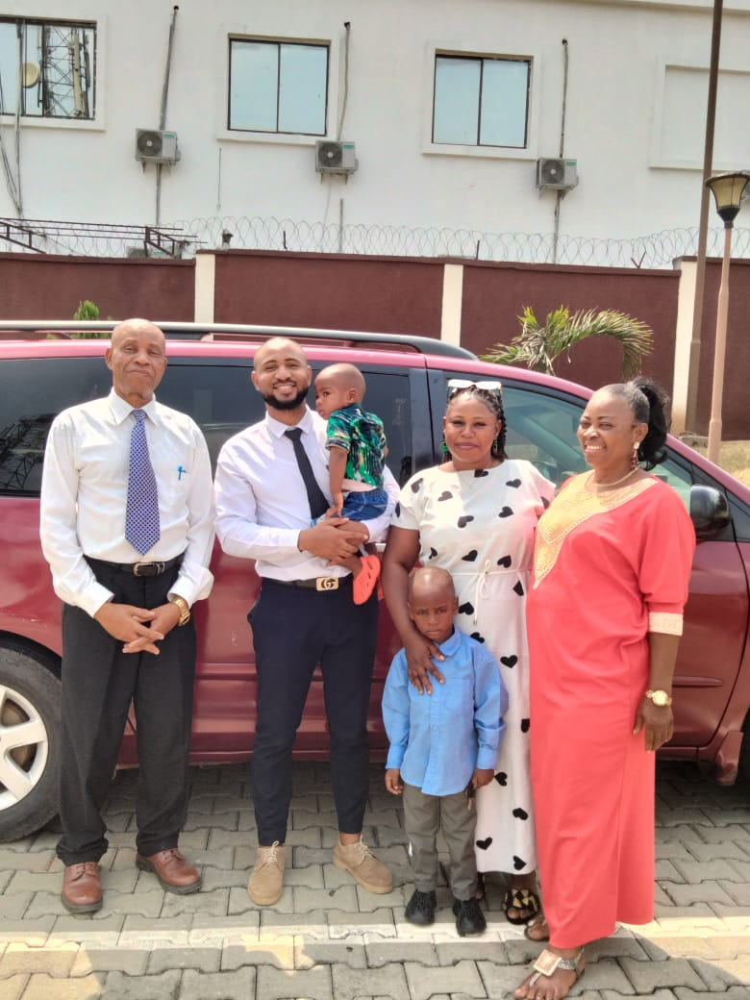
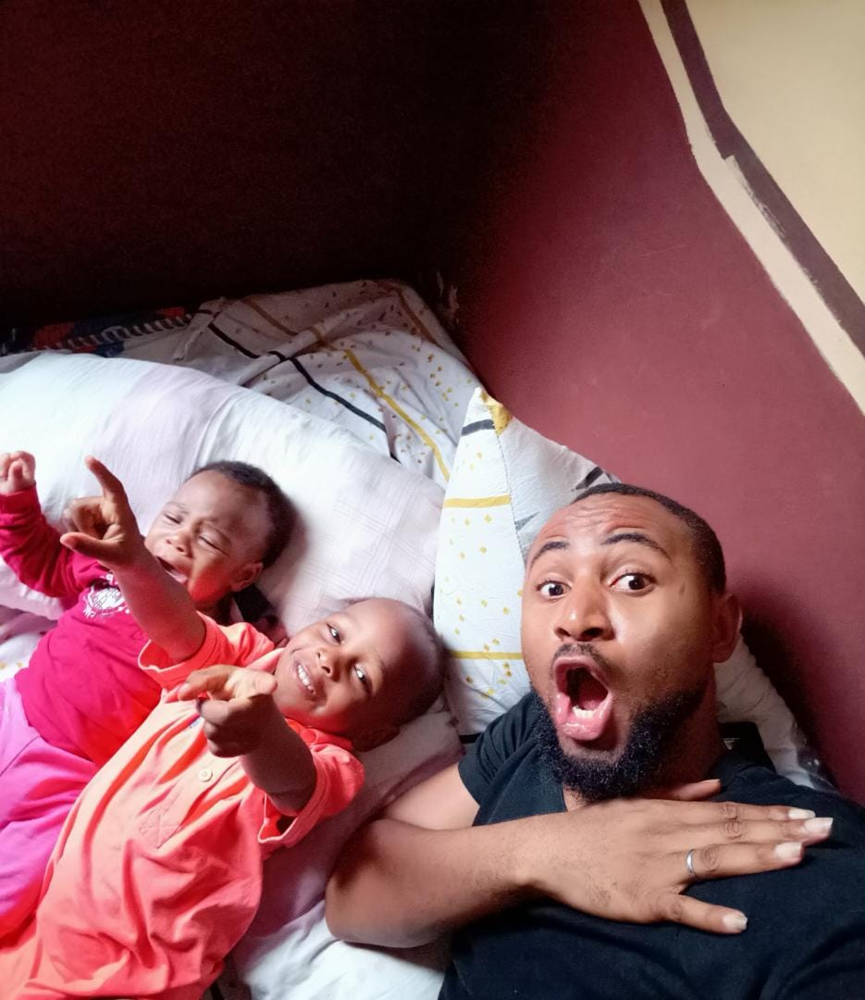

Welcome to my page...
Hi there. My name is Prince Ogbonnaya Nwachukwu I am a Nigerian, happily married with two (2) kids, and have a lovely small family. I am blessed to have served a full-time mission for the Church Of Jesus Christ Of Latter-Day Saints in Cape Coast Ghana 2011-2013, and also privileged to presently serve as the Sagamu ward Bishop in Ogun state Nigeria.
 I have been in the Tech and marketing industry with over 7 years of experience in marketing, customer service, merchandise, brand promoting,and sales. I have worked as a brand Promoter for three(3) years under DX-TCHNOLOGY NIG-LTD a phone marketing company from 2019-2021 but presently I work as a mobile brand Trainer for OPPO Nigeria. My love for the Tech industry has grown so much that I recently studied Indi-Game Development for the past two (2) years and will be launching a game called "shape dodge" real soon. I am studying web and computer programing as a pathway course to archive Software Development in the nearest future. I am intelligent, open-minded, strong, athletic, friendly, and welcoming to new ideas that will build my carer as well as my intellect to become a better man, therefore, come up with your questions and request and have them fulfilled.
Thank you.